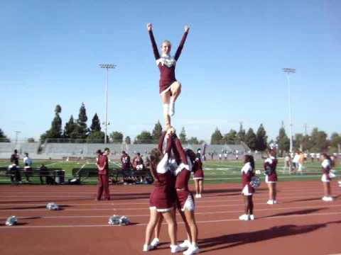
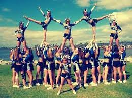
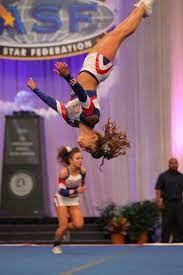
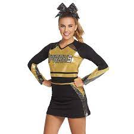
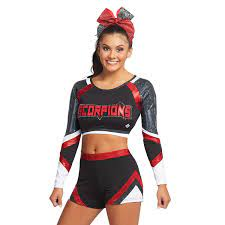
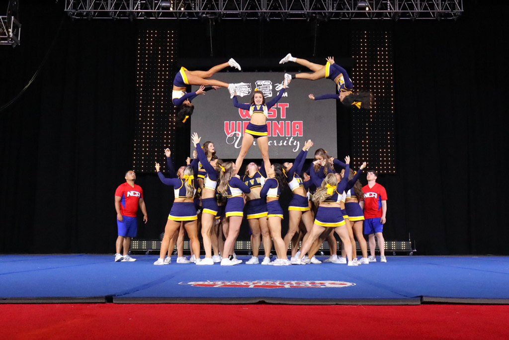
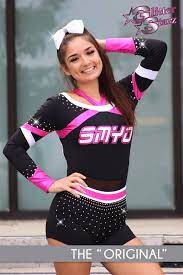
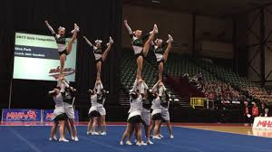
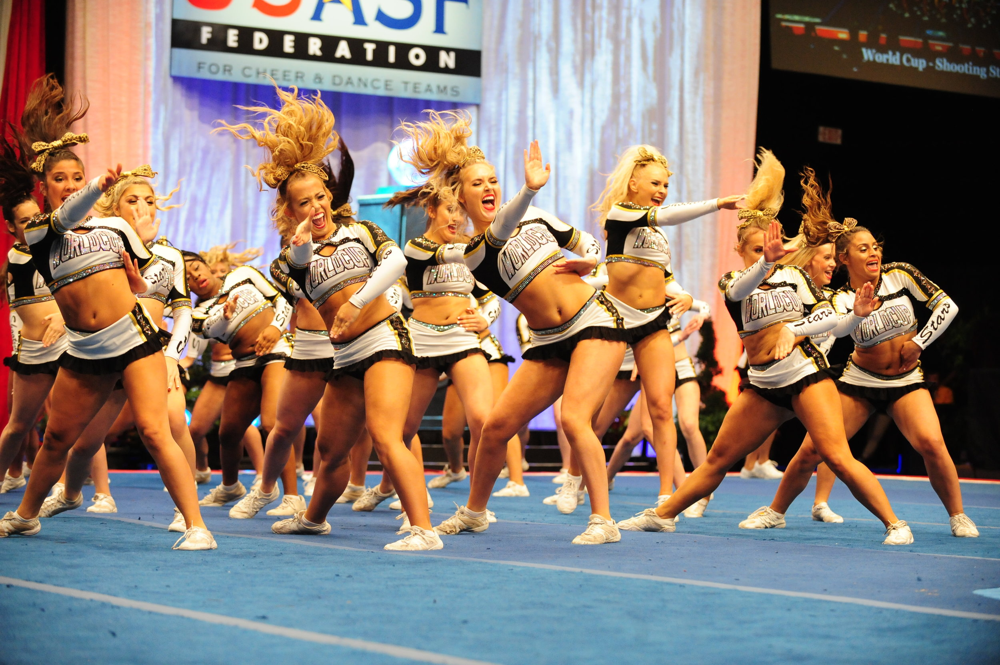

Everything you need to know about Competitive Cheer!
WHAT IS IT? Competitive cheer also known as competition cheer is when different schools cheer teams or "All Star" cheer gyms compete against each other at cheer competitions. At a typical competition teams perform a two and a half minute routine filled with jumps, tumbling, stunts, dance, and a pyramid. Judges score the routine based of difficulty and execution. Competing as a team is very challenging and takes lots of focus and athleticism. Competitive cheer can be "CO-ED" meaning there can be boys as well as girls. For High School Cheer teams in each state compete in around 6-8 competitions with the last competition being qualifiers.Then the top 15 teams will advance to "states" which is where the grand state champion is announced.
STUNTINGIn both sideline and competitive cheer (Highschool and All Star) you stunt. In Competitions, You have three sets of stunt combinations performed throughout your routine. To stunt you need to have two bases one being a main the other being a side, a backspot and a flyer combined together create a stunt group. In highschool competitive cheer there is 5 or 6 stunt groups. The first stunt performed is called the "elite stunt" This usually entails a full up or switch up or any other higher difficulty stunt followed by the flyer pulling a heel stretch. Following the Elite stunt is the "secondary stunt" this is a less difficult stunt but can still get you points. This stunt is usually a switch up or Lib in extension.  This is a lib. Lasty is the pyramid. In this stunt all 5 or 6 stunt groups link together and perform baskets, switch up, fullups, etc. all while connected. All of these components combined create your stunting portion of the routine and score sheet.  This is what part of a pyramid looks like.
TUMBLINGThis is second most important on the score sheet. The first Section is standing tumbling which is done by everyone on the mat. Tumbling ranges from a standing backhandspring to two backhandspring to a full. Next is running tumbling, obviously as the difficulty increases you will gain more points. The simplest pass you can throw is a running round off backhandspring, as the difficulty increases you can throw things like a running round off backhandspring tuck and full or arabian. To get maximum points you need the majority of people on the mat to have running tumbling. 
UNIFORMSCompetitive Cheerleading uniforms are commonly made by the brands "Rebel Athletics" and "Varsity". Uniforms are designed in your school colors and oftentimes are full of rhinestones and glitter. A majority of the time, uniforms have 2 parts to them, A leotard and a skirt or shorts. The leotard has your mascots name on it or school name and is longsleeve. Additions can be made to amplify your need on your uniform such as: ruffles, extra text, and sparkles.  This is a highschool uniform. In "All Star" cheer you are allowed to have two piece uniforms that show your midriff; However, this is not allowed in High School Cheer.  This is an All Star uniform.
PHOTOS:
   